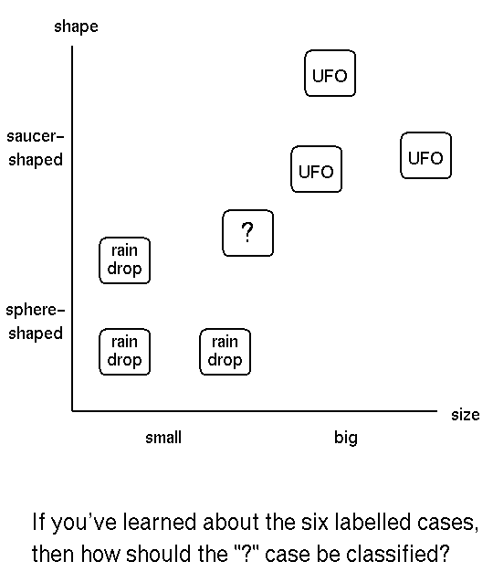
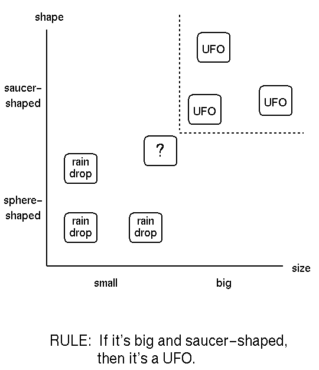
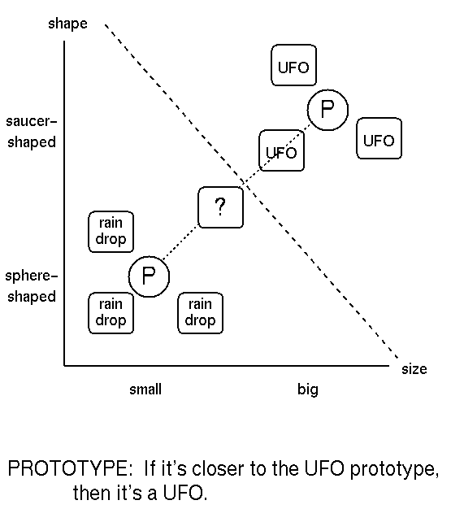
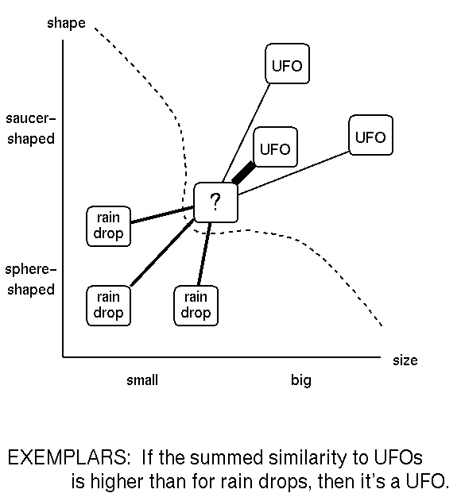

| Instructor | Assistant | |
| Name: | John K. Kruschke | Mark Johansen |
| Office Room, Phone: | PY 336, 855-3192 | PY 291A, 855-8694 |
| Office Hours: | by appt. | Th 9-11 |
| E-mail: | kruschke@indiana.edu | mjohanse@indiana.edu |
| REPRESENTATION | PROCESS | |
| for Learning |
for
Classifying |
|
| Rules | strategies for rule induction | apply rules |
| Prototypes | update current prototype(s) | compare with prototypes |
| Exemplars | memorize exemplars | integrate similarities to all exemplars |




A question to consider:
Copyright © 1996 by John K. Kruschke